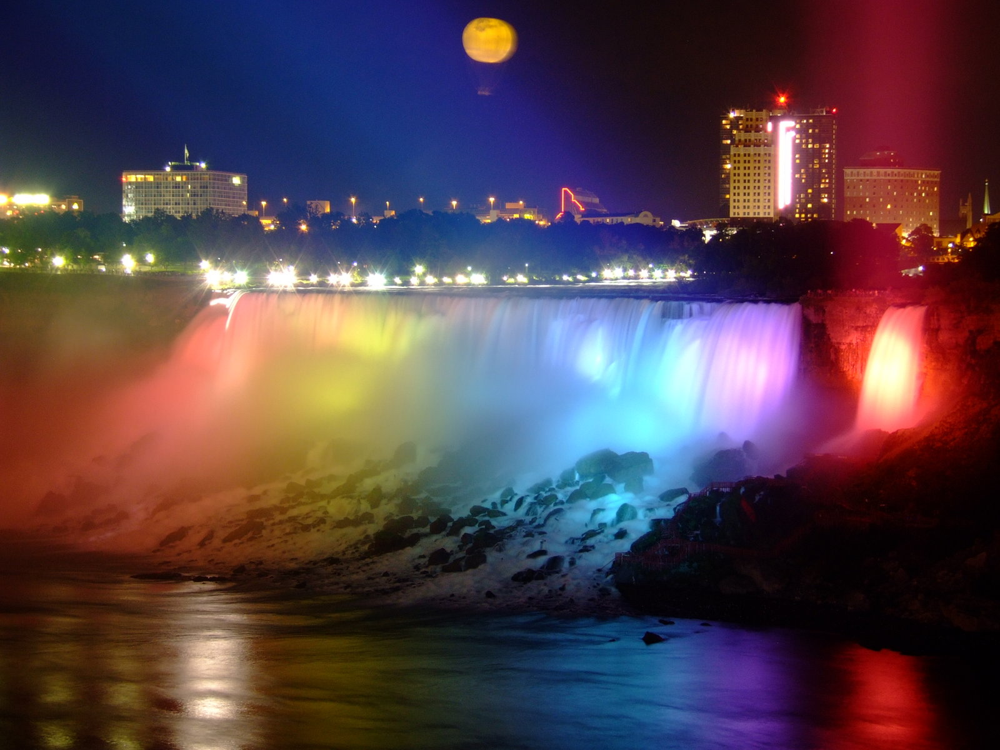

Niagara Falls


Photo Gallery

The Horseshoe

A rainbow in Niagara Falls

A sunset at Niagara Falls

A colorful view of Niagara Falls

A distant look at Niagara Falls
Steven Jacovitch © 2023
Boulder, Colorado


Photo Gallery

Campus During Winter

Pearl Street Mall

Winter Flatirons

Summer Time Flatirons

Varsity Pond
Colleen van Lent © 2023
Chiang Mai


Photo Gallery

Hot Balloons

Thailand Elephants

Buddhist Monks

Don’t forget to treat yourself with delicious Thai food!

Ancient Temple
Cindy Ye © 2023